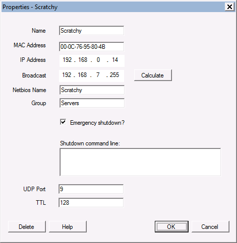
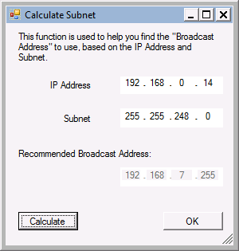

Properties
- Name: This is the name you use to
describe the host. It can be anything you want.
- MAC Address: Must be the MAC of the
network card that is enabled for WOL.
- IP Address: If you are using static
addressing, enter the IP address here. If you are
using DHCP, leave this field blank.
- Broadcast: This is the directed-subnet broadcast address
that WOL will send the packet to. For most networks,
the default value of 255.255.255.255 is appropriate. Use the Calculate
button to open a helper window for this. See the below
under "Calculate Subnet" for more information.
- Netbios name: This is the Windows Netbios name of the
host, or the FQDN of the host.
- Group: This is an option group that you
put the host into, for example: "Servers".
- Emergency shutdown: If this box is checked, then this
host will be shutdown when you click the "Emergency
shutdown" button.
- Shutdown command line: Windows hosts can be shutdown
directly, but other operating systems, such as Linux,
require you to enter a command here to shut them down.
I usually use a putty command to do this. Leave this
field blank to use Netbios to shutdown a Windows host.
- UDP Port: This is normally set to
port 9, but you may override it when you need to
traverse routers into other subnets.
- TTL: This field lets you override
the TTL, or Time-To-Live of the broadcast packet.
In almost all cases, the default of 128 is satisfactory.
- Delete: Use the Delete button to
delete this host from the database.
|
 |
|
 |
Using the subnet helper
The "broadcast subnet" refers to the address WOL will
broadcast to to wake up the host. In simple
configurations where the host is on the same subnet,
255.255.255.255 is usually correct. In subnetted
networks, or to send WOL packets to other networks, you must
enter the correct "directed broadcast" subnet address here.
To make this easier, click the "Calcuate" button and a
helper will pop up. Enter the IP address and subnet of
the host and click "Calculate". Press OK and the
broadcast address will be copied back to the properties page
for you.
Subnet directed broadcasts
Most user will have hosts on the same subnet as the WOL
computer. WOL packets are not routed unless you
explicity configure your network to do so. By using Subnet
Directed Broadcasts, you can have WOL target a specific
subnet to deliver the Magic Packet. The router at the
destination subnet must be configured to convert the packet
into a true broadcast packet.
This technique makes it possible to wake up groups of
machines on multiple networks, and even across the Internet.
|
<- Prev (Main Window)
Next (Waking Up) -->